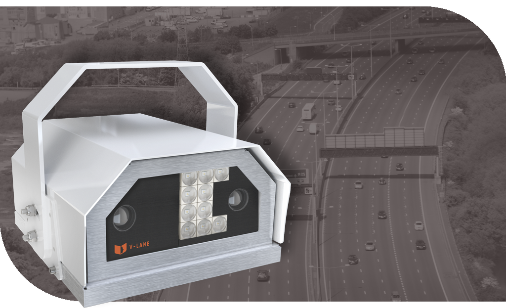
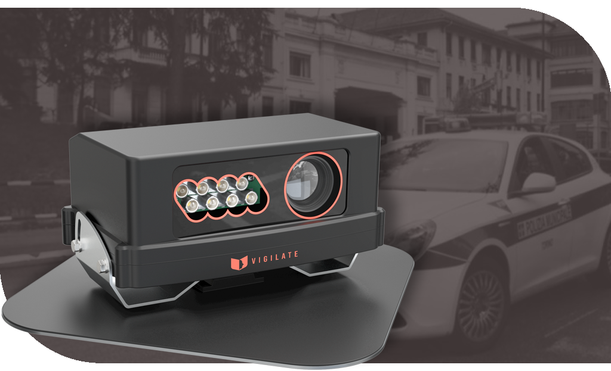

V-LANE TIPO A
Una sofisticada cámara tipo CCV, diseñada para ofrecer un nivel de vigilancia sin precedentes. Esta solución excepcional puede monitorear con precisión hasta cinco carriles de carretera, con una cobertura que se extiende hasta 50 metros de distancia. Sin embargo, su versatilidad va mucho más allá de las características básicas. Nuestra cámara establece un estándar en la industria de la vigilancia, ya que puede ser personalizada para satisfacer las necesidades específicas de cada cliente. Cada aspecto, desde el hardware hasta la óptica instalada, es completamente modificable, asegurando una solución perfectamente adaptada a los contextos más complejos y situaciones diversas. Por lo tanto, si buscas una cámara que no solo ofrezca una amplia cobertura de vigilancia, sino que también pueda adaptarse perfectamente a tus necesidades, nuestra solución es la elección ideal. Revolucionando el concepto de cámara de vigilancia, ofrecemos tecnología que se adapta a ti, para que puedas obtener la máxima eficacia y seguridad en cada situación.

V-LANE TIPO B
Nuestra cámara diseñada a medida para autopistas. Este dispositivo avanzado ha sido desarrollado para ofrecer una precisión excepcional en la recopilación de datos, incluyendo modelos, colores, números de placas y tipos de vehículos, incluso a velocidades variables. Sin embargo, su característica distintiva va más allá de la capacidad para detectar detalles fundamentales. Este extraordinario dispositivo está diseñado para el entorno desafiante de las autopistas, donde la precisión y la confiabilidad son fundamentales. La cámara es capaz de capturar con precisión la información clave incluso en condiciones de tráfico intenso y flujos vehiculares a alta velocidad. Esta capacidad de adaptación es crucial para garantizar la seguridad y la gestión efectiva de las autopistas modernas. Pero la verdadera revolución está en su característica principal: la conectividad inalámbrica. Además de poder conectarse mediante cableado tradicional, nuestra cámara puede establecer una conexión inalámbrica confiable.

V-COUNTER MANAGER INTERIOR
Un dispositivo avanzado que combina la eficiencia de cámaras de última generación con un motor de procesamiento inteligente, conocido como "v-engine". Este sistema representa un salto adelante en seguridad, adaptable tanto para edificios de tamaño pequeño como para estructuras de gran complejidad. Además del poder de monitoreo, el sistema se distingue por su capacidad de análisis avanzado, caracterizado por el reconocimiento de formas y objetos tridimensionales. La versatilidad de este sistema es verdaderamente notable. Ya sea en edificios pequeños o en estructuras más grandes, el dispositivo puede adaptarse perfectamente a diferentes necesidades. Las cámaras dentro del sistema no solo capturan detalles con precisión, sino que el corazón de esta tecnología, el "v-engine", permite administrar y sincronizar la información recopilada. Este procesamiento inteligente es fundamental para crear una vigilancia fluida e integrada. Un punto fuerte crucial es la capacidad de reconocimiento tridimensional, una característica que va más allá del simple reconocimiento de imágenes.

V-COUNTER MANAGER EXTERIOR
Un dispositivo de vigilancia que aprovecha el potencial de varias cámaras avanzadas, unidas y orquestadas por el sofisticado motor de procesamiento, el "v-engine". Este sistema representa otro paso adelante en la garantía de una vigilancia sin compromisos, adaptable a varias situaciones y entornos. En el corazón de esta solución se encuentran las cámaras externas empresariales de Samsung, expertas en enfrentar los desafíos del entorno exterior. Estas cámaras han sido diseñadas para resistir las inclemencias del tiempo, las precipitaciones y los elementos adversos, garantizando un rendimiento confiable en cualquier condición meteorológica. Esta robustez es fundamental cuando se trata de proteger edificios, áreas y espacios al aire libre. Además de su resistencia, estas cámaras representan una combinación de potencia y precisión. Equipadas con la capacidad de realizar reconocimientos tridimensionales, pueden capturar y analizar detalles con precisión, proporcionando una visión más completa y comprensiva del entorno vigilado. La mejora de la resolución, en particular para el reconocimiento de individuos, es un elemento clave, asegurando que cada detalle se capture de manera nítida y definida.
¿QUÉ HACEN NUESTROS EMPLEADOS?
(parte realizada por mí como pasante)
En el corazón de nuestros laboratorios, un equipo de talentosos empleados se dedica con celo y competencia al ensamblaje de productos de alta calidad. Este proceso se realiza con meticulosa atención, ya que entendemos la importancia de ofrecer soluciones que estén perfectamente alineadas con las necesidades específicas de nuestros clientes. Cada paso, cada detalle se considera y se implementa cuidadosamente, garantizando que cada producto que sale de nuestras líneas de producción sea un estándar de excelencia en términos de funcionalidad y personalización. Pero nuestro compromiso no se detiene aquí. Una vez ensamblados, los productos se someten a un riguroso proceso de prueba, tanto física como digitalmente. Este enfoque holístico para verificar la integridad del producto garantiza que cada función, cada característica esté perfectamente calibrada y lista para enfrentar los desafíos reales que encontrarán nuestros clientes. Desde análisis de datos hasta pruebas prácticas, cada fase de prueba está diseñada para garantizar un rendimiento impecable y confiable. Nuestra atención a la calidad también se extiende a la gestión del embalaje y envío. Reconocemos que un producto de alta calidad merece ser presentado al cliente de manera impecable. Nuestros empleados se dedican con empeño a empaquetar cada artículo con el máximo cuidado, asegurándose de que esté adecuadamente protegido para enfrentar el viaje hacia el cliente final. Esto refleja nuestro compromiso con la satisfacción del cliente, asegurando que cada producto llegue en las mejores condiciones posibles. En resumen, nuestro proceso de producción está impregnado de atención, cuidado y dedicación. Nuestros laboratorios son el punto donde la artesanía y la tecnología se fusionan para crear soluciones que superan las expectativas. Desde el ensamblaje hasta la personalización, desde las pruebas hasta la gestión del embalaje, cada fase de nuestro proceso está guiada por la pasión por la excelencia y la entrega de productos que realmente pueden marcar la diferencia en la vida de nuestros clientes.


 +39 3922553422
+39 3922553422 vigilates_srl
vigilates_srl vigilates_srl
vigilates_srl vigilates.srl@gmail.com
vigilates.srl@gmail.com{kind=link}